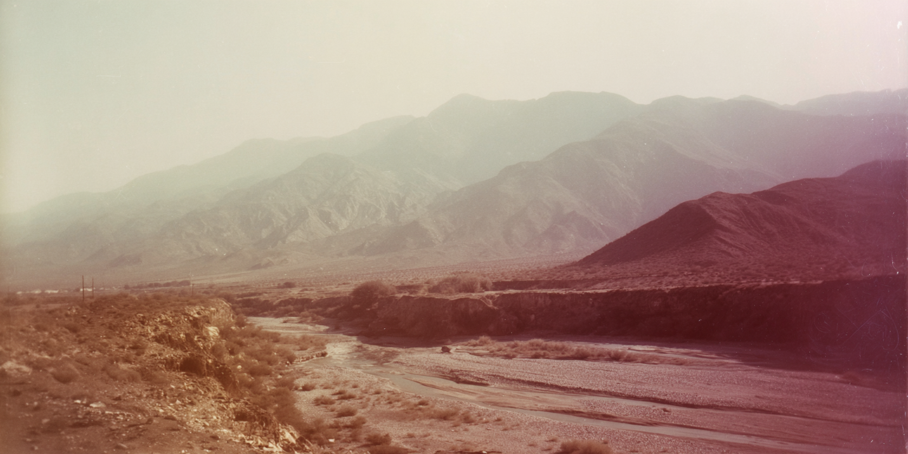
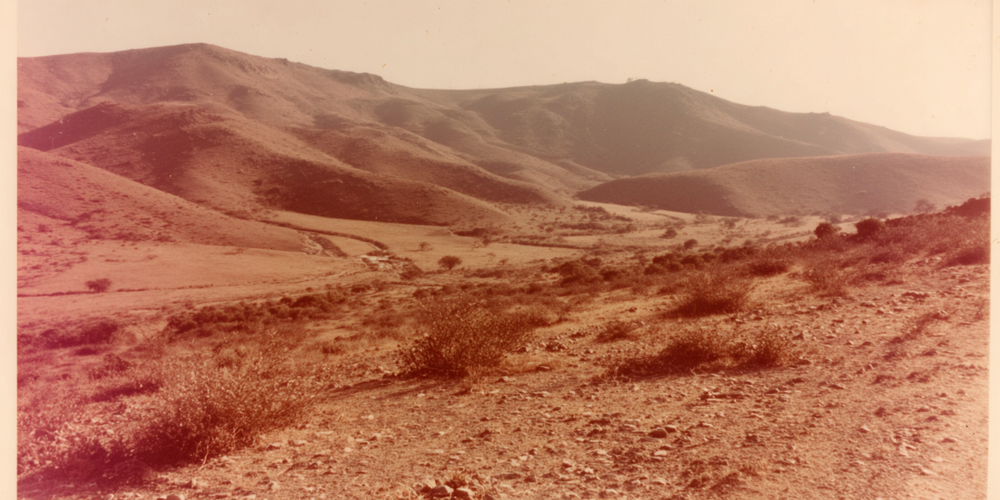
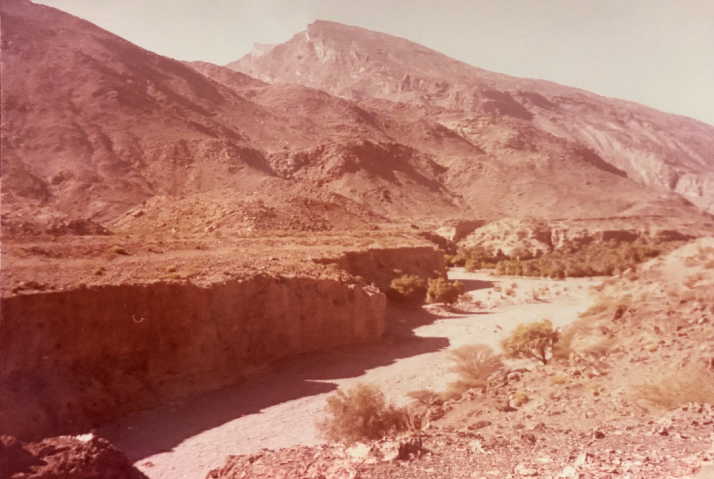

A dry, rocky mountain landscape with a winding riverbed
A rocky desert canyon
with a dry riverbed running
between steep eroded cliffs,
sparse shrubs along the banks,
and a mountain ridge in the
background under a hazy sky.
A broad desert valley containing a dry braided riverbed, low rocky embankments, sparse shrubs,
and layered mountain ranges diminishing in contrast with distance.
desert close up of desert hills, faded 1970s analog photograph, sun-bleached colors, subtle dusty pink and muted ochre tones, soft film grain, overexposed sky swallowing detail, heat shimmer distortion, empty space dominating frame, melancholic stillness, edges dissolving into white, subtle light leaks, sense of isolation and time passing, , imperfect composition, 35mm kodachrome, muted natural colors, low contrast grading, soft highlights, hazy atmosphere, arid heat. Light film grain, organic texture, low digital sharpness, no vivid colors. Shot like contemporary cinema, realistic, alive, subtle faded blurry shutter motion
desert hills and valley in Iran, distant hills barely visible through haze, faded 1970s analog photograph, sun-bleached colors, subtle dusty pink and muted ochre tones, soft film grain, overexposed sky swallowing detail, heat shimmer distortion, empty space dominating frame, melancholic stillness, edges dissolving into white, subtle light leaks, sense of isolation and time passing, memory eroding but landscape remaining, imperfect composition, 35mm kodachrome, muted natural colors, low contrast grading, soft highlights, hazy atmosphere, arid heat. warm sky, soft warm reflections on wet sand. Light film grain, organic texture, low digital sharpness, no vivid colors. Shot like contemporary cinema, realistic, alive, subtle faded blurry shutter motion
desert close up of ground in Iran hills, faded 1970s analog photograph, sun-bleached colors, subtle dusty pink and muted ochre tones, soft film grain, overexposed sky swallowing detail, heat shimmer distortion, empty space dominating frame, melancholic stillness, edges dissolving into white, subtle light leaks, sense of isolation and time passing, , imperfect composition, 35mm kodachrome, muted natural colors, low contrast grading, soft highlights, hazy atmosphere, arid heat. Light film grain, organic texture, low digital sharpness, no vivid colors. Shot like contemporary cinema, realistic, alive, subtle faded blurry shutter motion